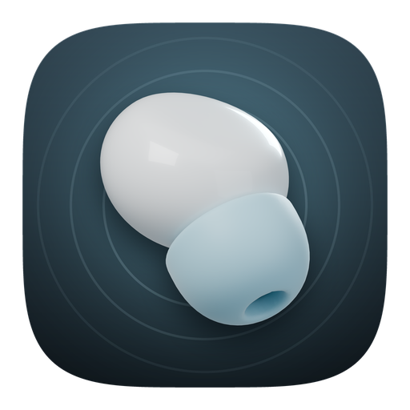
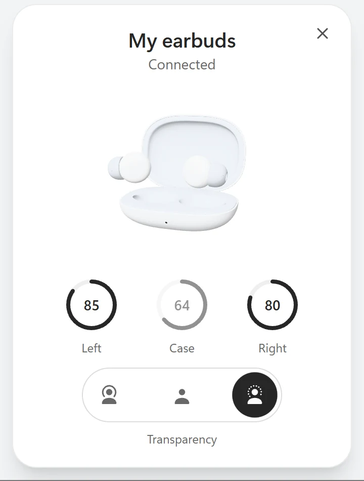

002Says helloA small card slides up when your buds connect, and stays out of the way of games and films.

Free Open source, MIT licensedYour Beats Fit Pro,
at home on Windows.
Battery for each bud and the case, noise control, press-and-hold and a popup when your buds connect. The things your iPhone shows, now on your PC.
Try it

In the case
85Left
64Case
80Right
Put your buds in to change noise control
001Live previewThe same 3D model the app uses. Pick a step, switch noise control, or drag to turn it.
What it does
Everything your iPhone shows,
now on your PC.
003Lives in your trayNoise control from the tray menu. Starts with Windows if you like, and stays out of sight.
004ShortcutsSwitch noise control from any window. Change every shortcut, and see if another app already uses it.
Left press and hold Volume down
005The hidden settingsPress-and-hold for each bud, ear detection and renaming, without the phone app.
006Updates itselfNew versions install in the background, checked against a signature built into the app.
- installer
- <3 MB
- in the tray
- ~6 MB
- idle CPU
- 0%
007TinyNative Windows, not a browser in a box. You won't notice it's running.
Built to be trusted
Quiet, private and polite.
- Never fights your phone. FitsWise only talks to your buds while Windows is already using them.
- Nothing leaves your PC. No account, no analytics. It only goes online to check for updates, and you can turn that off.
- Open source. Every line is on GitHub under the MIT licence. Read it or build it yourself.
Questions
Which earbuds does it work with?
Beats Fit Pro. Other Beats get a clear "not supported yet" message, and FitsWise sends them nothing. Support for more models is welcome on GitHub.
Windows says it protected my PC. Is it safe?
That SmartScreen warning appears for new apps without a paid code-signing certificate. Choose More info, then Run anyway. The source and every release are public, and updates are signed.
Do I need a driver or the phone app?
No. Pair your buds in Windows Bluetooth settings and open FitsWise. It uses the same connection Windows already has.
Noise control switches itself off. Why?
Your buds turn it off when their sensors can't feel your ears. FitsWise tells you when that happens. Reseat the buds or wipe the sensors.
Is FitsWise made by Apple or Beats?
No. It's an independent project and isn't affiliated with, endorsed by or sponsored by Apple or Beats.